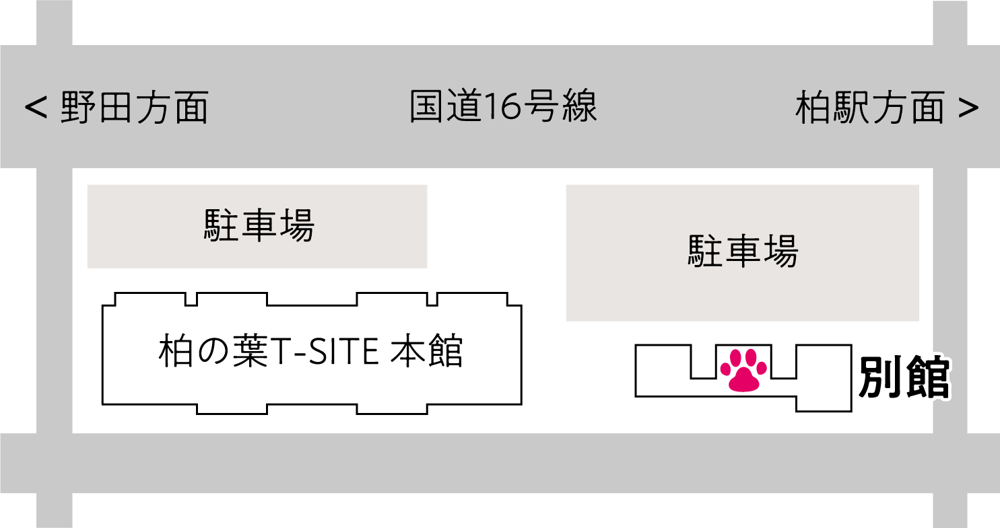

柏の葉動物医療センター
- 住所
- 〒277-0871
千葉県柏市若柴227-1
柏の葉T-SITE 別館B棟 - 電話番号
- 04-7197-2170
- 駐車場
- 柏の葉T-SITE施設駐車場利用可能
- 電車
- つくばエクスプレス「柏の葉キャンパス駅」から徒歩9分
駐車場のご案内
柏の葉T-SITE施設の駐車場をご利用ください。
駐車場は下図のように病院隣駐車場をご利用いただくと便利です。
※駐車場ご利用の際は駐車券を受付スタッフまでご提示ください。

柏の葉T-SITE施設の駐車場をご利用ください。
駐車場は下図のように病院隣駐車場をご利用いただくと便利です。
※駐車場ご利用の際は駐車券を受付スタッフまでご提示ください。
